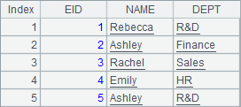
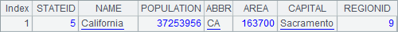
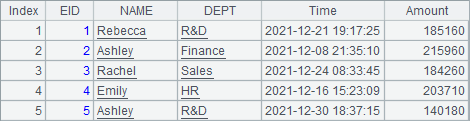
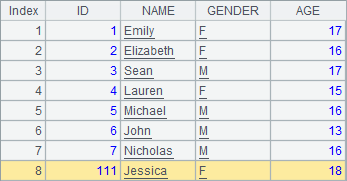
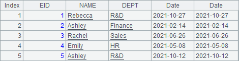
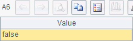

3.7.2 Using time key in table associations
Associations between tables can be handled using the time key, too, if it is set for one of the tables. When associating table sequence T with record sequence A, A.join(C:¡, T:K, x:F, ¡) function will search records according to the time key, as shown in the following example:
|
|
A |
B |
|
1 |
=file("transaction.btx") |
=demo.query("select EID, NAME, DEPT from EMPLOYEE where EID < 6") |
|
2 |
=A1.import@b() |
>A2.keys@t(UID, Time) |
|
3 |
=B1.join(EID, A2, Time, Amount) |
|
|
4 |
=B1.join(EID:date(2021,5,1), A2, Time, Amount) |
=B1.join(EID:date(2021,5,1), A2:UID:Time, Time, Amount) |
B1 retrieves the first five employee records from EMPLOYEE table:

A2 imports transaction.btx, the bank transaction file, generated in the previous section. B2 sets UID as the basic key and Time as the time key for the bank transaction table, as shown below:

A3 associates employee records and bank transaction table using A.join() function. The join operation matches employee records with bank transaction records according to employee ID (EID) and retrieves Time and Amount fields from the matching transaction records. The result is as follows:

Since the employee table B1 does not have a datetime field and the association is performed only by EID field, the current is used to match the time key in bank transaction table, the result set contains records with the last transaction time and the final account balance.
A4 specifies 2021-05-01 as the time key value for the association and gets the following result:

The result set contains records with the latest time and balance before the specified time point. If the key K does not specifically set for table sequence T in A.join(C:¡, T:K, x:F, ¡) function that performs an association, the existing primary key is used, as the case in A4. B4 returns a same result by specifying the primary key for association.
The time key is also used in A.switch() function that performs table association. For example:
|
|
A |
B |
|
1 |
=file("transaction.btx") |
=demo.query("select EID, NAME, DEPT from EMPLOYEE where EID < 6") |
|
2 |
=A1.import@b() |
>A2.keys@t(UID, Time) |
|
3 |
=B1.derive(Date) |
|
|
4 |
2021-1-1 |
>A3.run(Date=A4+rand(365)) |
|
5 |
>A3.switch(EID:Date, A2:UID:Time) |
=A3.new(EID.UID:ID, NAME, Date, EID.Time:Time, EID.Amount:Amount) |
|
6 |
>B1.switch(EID, A2) |
=B1.new(EID.UID:ID, NAME, EID.Time:Time, EID.Amount:Amount) |
A3 adds a Date field to the employee records. Line 4 populates random date values to it. Below is the result set in A3:

A5 associates employee records with bank transaction table by matching the former¡¯s EID & Date with the latter¡¯s basic key and time key, and performs a switch-over. Below is A5¡¯s result after the replacement, where EID values have been replaced by matching bank transaction records:

For convenience of viewing and querying, B5 generates a table sequence based on A5¡¯s joining result:

B5 gets from bank transaction record values under EID the account balances of the last transactions before the time point specified in Date. In A5¡¯s code, A2¡¯s primary key can be absent, and in that case, the switch operation will be performed by the table sequence¡¯s default primary key and still get the same result.
If the switch operation is performed between B1¡¯s employee records that do not contain date data and the bank transaction records, the former¡¯s default primary key will be used, as the case in A6. B6 then generates the following table according to A6¡¯s joining result set:

Here the current time is assigned to the time key, and the search result is the current account balances.